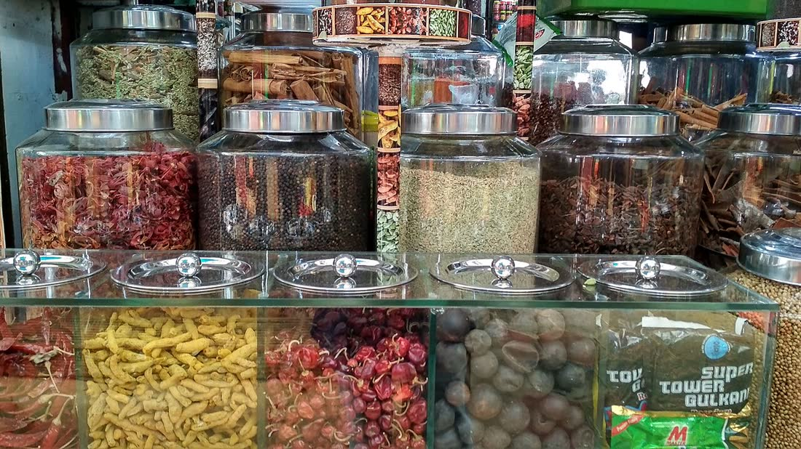
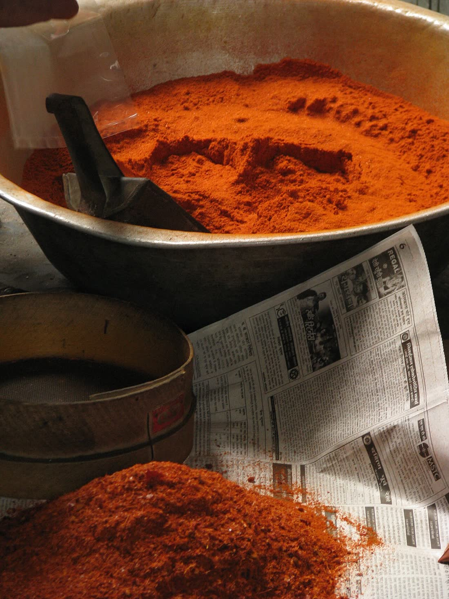
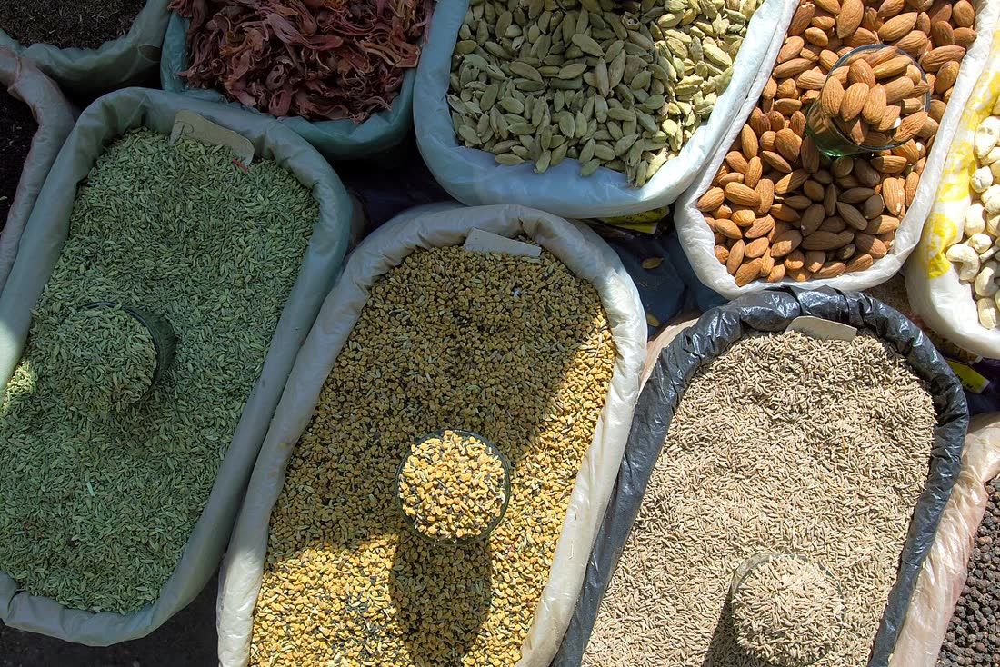

1
Turmeric, whole fingers, bulbs & powder
Sourced from India's top turmeric belts. Every lot is checked against the buyer's curcumin and IPM specifications before it ships.
[ WHAT I DO ]
Premium Indian spices, sourced at origin, checked against buyer specs and shipped on time, from first inquiry to final delivery.
Trusted by buyers in Russia, Nepal, the UK and Germany.
[ WHAT I EXPORT ]
1
Sourced from India's top turmeric belts. Every lot is checked against the buyer's curcumin and IPM specifications before it ships.
2
Whole chillies, flakes and powder, graded for colour, pungency and moisture to the buyer's requirement.
3
Cleaned cumin seeds and powder. Purity grade is agreed upfront, and samples go out before any order is confirmed.
4
Aromatic green cardamom graded by size and colour, packed to keep its aroma through long ocean transits.
[ ALSO AVAILABLE ]
[ GLOBAL REACH ]
Shipments to the CIS region executed end to end, from buyer identification and sampling through to delivery.
Completed export orders into South Asia, covering pricing, documentation and logistics.
Active buyer relationships in Europe, with ongoing quotations and sampling.
Active buyers in the EU market, served to strict quality and documentation standards.
Also building buyer networks in the Middle East (GCC) and Southeast Asia (Indonesia).
I'm Rahul, an Export Sales Executive connecting India's spice farms with serious buyers around the world.
[ MY START ]
I studied Computer Science, then moved into agri-commodity exports at Shumitra (Silasya Fusion Pvt. Ltd.). I find buyers through LinkedIn, B2B trade portals and direct outreach, prepare FOB, CIF and CFR quotations, and handle every shipment end to end. My tech background keeps the process data-driven.
[ ON THE GROUND ]
From turmeric fields in Salem and Erode to Sangli, Nizamabad, Nanded and Hingoli, I work directly with India's key sourcing belts, backed by 40,000+ farmers and 800+ aggregators.



Today my focus is clear: reliable quality, honest pricing and on-time shipments, so every buyer comes back for the next order.
[ WHAT I DO BEST ]
Export Sales · Buyer Acquisition · Lead Generation · Trade Negotiation · Incoterms (FOB, CIF, CFR) · Export Documentation · Container Planning · Logistics · Supplier Sourcing · Quality Verification
[ INQUIRY TO SHIPMENT ]
Product, grade, specs, quantity, packaging and destination port.
Samples are dispatched for approval before any commitment is made.
Clear FOB, CIF or CFR pricing with full export costing.
Procurement from trusted suppliers, with every lot verified against agreed specifications.
Container planning, logistics coordination and complete export documentation.
Shipment tracking, buyer feedback and planning for repeat orders.